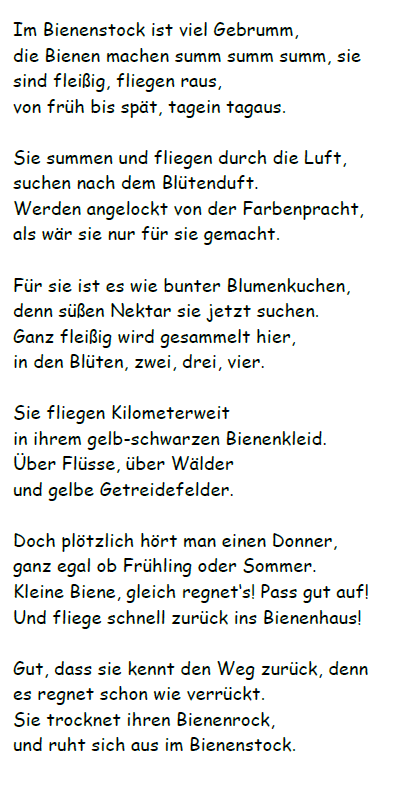
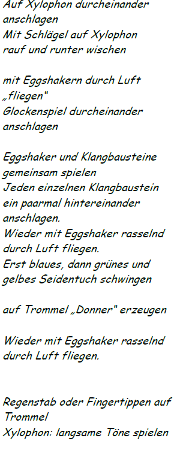

Planung Klanggeschichte Bienen
Planungskonzept von | Datum der Durchführung | Elementarpädagogische Einrichtung |
|---|---|---|
Bildungsbereiche: Sprache und Kommunikation Lernumgebung/Setting: Didaktikraum | Kompetenzen: Das Kind kann… SA: …die Instrumente richtig benennen. …die Instrumente korrekt verwenden. SO: …eigene Wünsche bei der Instrumentenwahl über einen Zeitraum aufschieben. …mein Spieltempo und meinen Spieleinsatz an die anderen anpassen. SE: …die Mundmotorik gezielt zum Summen einsetzen. …alle Sinne in möglichst vielfältiger Art und in verschiedenen Bereichen einsetzten, sie dadurch schulen und differenzieren. Musik als Mittel des Ausdrucks erleben LMK: …die Bildkarten zum Erzählen der Geschichte nutzen. …die Instrumentenbildkarten für den richtigen Einsatz verwenden. MK: …die Bildkarten zum Erzählen gezielt einsetzten. …die Bildkarten bei einer schwierigen Textstelle gezielt heranziehen. …die Verbindung von Sprache, Bilder, Musik und Wiederholung gezielt nutzen, um meine Merkfähigkeit zu verbessern. | Lernform: Spielen Zielgruppe: Kinder im letzten Kindergartenjahr (5-6 Jahre) KD XY + 4 weitere KD
Kleingruppe |
|---|---|---|
Bildungsinhalt: Klanggeschichte: Fleißige Bienen, Simone Ludwig | Bildungsinhalt: Klanggeschichte: Fleißige Bienen, Simone Ludwig | Bildungsinhalt: Klanggeschichte: Fleißige Bienen, Simone Ludwig |
Vorangegangene Beobachtung und/oder Interesse des Kindes: KD XY hat gestern eine Biene bei uns im Gruppenraum entdeckt. Anja und zwei weitere KD der Gruppe zeigten daraufhin großes Interesse an Bienen (Wo leben sie? Was machen sie im Winter? Etc.) Wir schauten daraufhin ein Bilderbuch über Bienen an und singen das Lied: Das Lied vom Honigdieb – Tina Birgitta. | Vorangegangene Beobachtung und/oder Interesse des Kindes: KD XY hat gestern eine Biene bei uns im Gruppenraum entdeckt. Anja und zwei weitere KD der Gruppe zeigten daraufhin großes Interesse an Bienen (Wo leben sie? Was machen sie im Winter? Etc.) Wir schauten daraufhin ein Bilderbuch über Bienen an und singen das Lied: Das Lied vom Honigdieb – Tina Birgitta. | Vorangegangene Beobachtung und/oder Interesse des Kindes: KD XY hat gestern eine Biene bei uns im Gruppenraum entdeckt. Anja und zwei weitere KD der Gruppe zeigten daraufhin großes Interesse an Bienen (Wo leben sie? Was machen sie im Winter? Etc.) Wir schauten daraufhin ein Bilderbuch über Bienen an und singen das Lied: Das Lied vom Honigdieb – Tina Birgitta. |
Didaktisches Prinzip: | Didaktisches Prinzip: | Didaktisches Prinzip: |
Vorbereitende Tätigkeiten: Ausführlich anführen! | Vorbereitende Tätigkeiten: Ausführlich anführen! | Vorbereitende Tätigkeiten: Ausführlich anführen! |
Materialien/Medien: | Materialien/Medien: | Materialien/Medien: |
Vorbereitete Umgebung: Schauplatz: Aus braunen und schwarzen Rhythmiktüchern und einem umgedrehten Waschkübel wird ein Bienenstock hergestellt. Außerdem werden Frühlingsblumen, grüne Chiffontücher und ein Fluss aus blauen Chiffontüchern gelegt. Darauf sind die Instrumente angeordnet. Jedes KD hat einen eigenen, braunen Polster. Diese werden im Halbkreis aufgelegt. | Vorbereitete Umgebung: Schauplatz: Aus braunen und schwarzen Rhythmiktüchern und einem umgedrehten Waschkübel wird ein Bienenstock hergestellt. Außerdem werden Frühlingsblumen, grüne Chiffontücher und ein Fluss aus blauen Chiffontüchern gelegt. Darauf sind die Instrumente angeordnet. Jedes KD hat einen eigenen, braunen Polster. Diese werden im Halbkreis aufgelegt. | Vorbereitete Umgebung: Schauplatz: Aus braunen und schwarzen Rhythmiktüchern und einem umgedrehten Waschkübel wird ein Bienenstock hergestellt. Außerdem werden Frühlingsblumen, grüne Chiffontücher und ein Fluss aus blauen Chiffontüchern gelegt. Darauf sind die Instrumente angeordnet. Jedes KD hat einen eigenen, braunen Polster. Diese werden im Halbkreis aufgelegt. |
Phase | Inhaltlicher Ablauf/Methodische Überlegungen | Methodenreflexion |
|---|---|---|
Übergang | Mit meiner Eggshaker-Biene fliege ich der Reihe nach zu dem einzelnen KD hin. Dabei singe ich „Summ, summ, summ, Bienchen summ herum“. Bei dem KD angekommen, fliege ich mit einem weiteren Bienen-Eggshaker zu dem Kind hin mit dem Spruch: „Summ, summ, summ, summ du doch auch mit mir herum“. Gemeinsam summen und fliegen wir in Schlangenlinien bis zum Didaktikraum, wo unser Bienenstock auf uns wartet. Wir fliegen einige Runden um unseren Bienenstock, bevor jedes KD sich auf einen eigenen, braunen Polster rund um den Schauplatz setzt. | Mein Ziel ist es, mit den Kindern in ein Spiel einzutauchen, um ihre Fantasie und das Rollenspiel weiter zu vertiefen. Durch die Verbindung von Sprache, Bewegung, visuellen und taktilen Reizen (Sehen und Begreifen der Bienen-Eggshaker) werden die Prinzipien der Ganzheitlichkeit und Lernen mit allen Sinnen angesprochen. |
Einstimmung | Die KD erproben die Eggshaker. Nach einiger Explorationszeit setzte ich gezielte, sprachliche Impulse: Was passiert, wenn: Die Bienen schneller/langsamer fliegen? Sie vor/hinter dem Körper gespielt werden? Sie anders gehalten werden? Wenn ein anderer Rasselrhythmus angewendet wird? Etc. Zum Schluss der Explorationsphase sage ich: | Ein großer Wert wird hier auf die Explorationsphase gelegt. Ihr wird genügend Zeit und Raum gegeben. Bei komplexeren Instrumenten wäre der Fokus außerdem auf der richtigen Handhabung der Instrumente gelegen. Unter Verwendung der methodischen Reihe (Stufenmodel). |
|---|---|---|
Hauptteil | Ich erzähle die Geschichte absatzweise und lege dabei zu jedem Absatz die passenden Bilder. Ich spreche zuerst den Absatz fertig, bevor ich die Bilder hinlege. Ich lege beim Erzählen beinen Fokus darauf, die Signalwörter für den Instrumenteneinsatz sprachlich hervorzuheben. Den zweiten Durchgang beginne ich damit, dass ich den Kindern sage: „ Am Ende der Klanggeschichte ruhen sich die Bienen im Bienenstock aus, genauso wie unsere Eggshaker Bienen. Sollen wir sie vorsichtig aufwecken? Wir sagen gemeinsam „Summ, summ, summ, Bienchen summt doch mit uns herum“. Jedes KD hat in dieser Runde einen Bienen-Eggshaker in der Hand und verwendet ihn an der richtigen Stelle. Ich spiele die restlichen Instrumente an den passenden Stellen. Wenn wir mit dieser Runde fertig sind, lege ich meinen Bienen-Eggshaker mittig vor die Kinder, und sage ihnen, dass meine Biene sich nun das nächste KD auswählt, dass den Regenstab spielen darf. Dazu drehe ich meine Biene, wenn sie stehen bleibt, wird das KD ausgewählt, zu dem ihr Kopf schaut. So machen wir das auch mit den anderen Instrumenten. Ich selbst mache mit der Biene mit und halte zu den richtigen Zeitpunkten die Bildkarten mit den richtigen Instrumenten in die Luft. Anschließend tauschen wir die Instrumente durch. Bein nächsten Tausch frage ich die KD, ob jemand ein Instrument noch nicht hatte, dass er/sie aber noch unbedingt haben möchte. Beim letzten Durchgang adaptiere ich die Geschichte so, dass der Regen immer stärker und stärker wird, der Donner immer lauter und lauter und der Wind immer stärker und stärker bis er plötzlich aufhört. | Wenn die KD den Text der Geschichte schon kennen bietet es sich an, gemeinsam mit den KD anhand der Bildkarten den Geschichtenverlauf chronologisch zu ordnen und die Geschichte nachzuerzählen. Zusätzlich würde ich dann allerdings noch Bildkarten der zu spielenden Instrumente an den richtigen Stellen hinzugeben. Differenzierung: Ich selbst ziehe mich verbal größtmöglich zurück und lasse die Bildkarten der Szenen, die Bildkarten der Instrumente und die KD die Klanggeschichte „erzählen“. Differenzierung: Ein KD übernimmt die Dirigentenrolle und zeigt mit den Bildkarten, welches Instrument zu spielen ist. |
Vertiefung/ | Der Sturm war so stark, dass er die Bildkarten der Geschichte durcheinandergewirbelt hat. Die KD helfen gemeinsam, die Bildkarten wieder in die richtige Ordnung zu bringen. Wir überprüfen die Reihenfolge, indem wir die Geschichte gemeinsam nacherzählen. | |
Übergang | Die KD schließen die Augen. Ich gehe mit dem Chiffontuch durch den Raum. Wenn ein KD von mir mit dem Chiffontuch berührt wird, summt es zurück in den Gruppenraum. |
Verknüpfung/ | Honigbrote zur Jause gemeinsam vorbereiten Sachgespräche über die Bienen / den Bienenstock / die Frühlingszeit Bewegungslandschaften zum Thema „Bienen im Frühling“ Rhythmikeinheiten zum Thema „Bienen“ Bilderbücher und Sachbücher zum Thema „Bienen“ und „Bienen im Frühling“ Kreativaktivitäten zum Thema (Bienen aus Pompoms, Drucktechniken, etc.) | |
|---|---|---|
Zone der nächsten Entwicklung | Geschichte ohne fremde Hilfe nacherzählen Passender Musikinstrumenteneinsatz ohne verbale Hilfestellung Selbstständiger, passender Musikeinsatz Dirigieraufgaben übernehmen |
Persönlicher Lerngewinn: SA: SO: SE: |
|---|
Abbildungen aus dem Dokument

